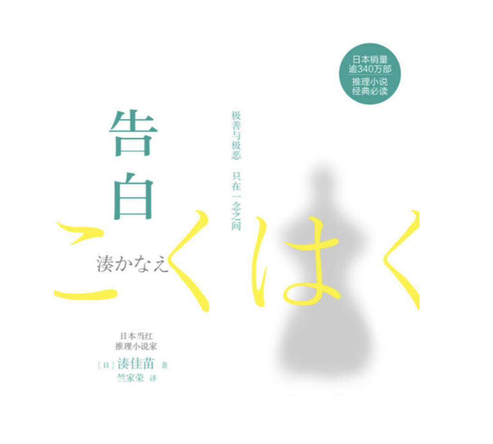

《告白》
简介
| 作者： | 凑佳苗（凑かなえ） |
| 国别： | 日本 |
| 体裁： | 小说 |
| 标签： | 悬疑、教育、人性 |
| 阅读时间： | 20240410-20240412 |
| 评分： | 🌟🌟🌟🌟 |
故事梗概
中学女老师森口在校园游泳池内发现自己的四岁女儿意外溺毙，经她私下调查，凶手是班上的两位学生，两位学生坦白，但其杀人动机实在荒唐。 痛失爱女的森口辞职，在结业式那天向全班学生告白真相，并透露了她的复仇计划，在学生们的心底种下恐惧的种子的故事，故事的真相也从每个人的告白中展开。
我的书评/读后感
无意中在图书馆日本文学书架上看到的一本，故事不长但尊嘟是很精彩的悬疑小说，吊打很多悬疑剧… 情节：刚开始并没看简介，开头是关于喝牛奶的部分，以为是一部校园霸凌的书，所以开头并未报很大的期望，但是读到三分之一的时候越来越被吸引，一次次被反转惊讶到，被青少年的恶无语到…且这部的亮点在于每个人都对自己的行为坦白（呼应书名），毫无隐瞒，并从主要人物的角度来叙述，虽然是同一个案子，但是每个人的心理活动却大相径庭（和读者预期也很大出入），他自己不说，就不会知道他当时的想法竟然会是如此…又呼应了本书开头第一句话“对于同一件事，因角度不同，看法天差地别的情况在这世上比比皆是。”在此警示自己：在未看到事情全貌时，也不要妄下定论。 惩罚：看到不少书友都是认同本书里森口老师的做法，我也不例外。作为半个法学生（半个有点多，三分之一吧），当然希望凶手能够被绳之以法，受到相应的制裁，但是惩罚的目的不应该只是刑罚的完成，更应该是凶犯发自内心的忏悔，书中森口老师的出发点就是让杀死自己女儿的凶手真心悔过，AB两人都活在痛苦之中，但痛苦的点都在于爱美的死，A活在没有母亲的痛苦中，B活在患HIV的痛苦中，自始至终都没为自己杀死爱美而懊悔、而道歉。第二章虽说每个人都没有资格当制裁者/审判者，若非说有资格的，那也是受害者，但是像森口老师这样，让北原这类无辜的人又成了新的受害者，制裁者失去了控制，就又有了新的犯罪和受害者…法律是官方的制裁，也是底线，有时还伴有延迟性，如果罪犯不知悔改（像A），刻意钻漏洞或者直接逃脱了，这时候再说没人有资格是制裁者反而是种圣母行为了（像书中森口老师的丈夫）… 有时候真的不要幻想‘拯救’一个人，因为永远不知道人性恶的边界会在哪…